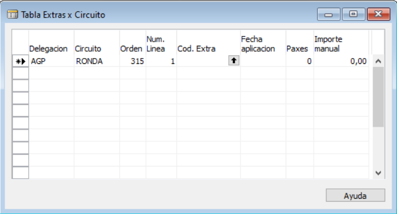

Reservas de circuitos
Crear una prereserva
Cuando el touroperador envia la información, de una reserva de circuitos, la creamos dentro de circuitos como una pre-reserva, estas pre-reservas se irán numerando automáticamente y sirven de base para la creación de las reservas del módulo de circuito, estas reservas se asignan a las salidas de los circuitos.
- Touroperador, para facilitar la selección de los touroperadores, se ha añadido un nuevo campo en la ficha de los touroperadores para indicar si trabaja con circuitos.
- Localizador touroperador, número de dossier de los clientes, este datos viajará a las reservas de los módulos de transfer y hotel para facilitar la identificacion de los pasajeros.
- Fecha inicio circuito, día de inicio del circuito (solo podremos asignar estos clientes a circuitos que salgan ese día).
- Fecha entrada, dia de llegada al destino, este día afecta a la reserva de transfer ya que hay que recogerlos ese día en el aeropuerto.
- Fecha salida, día de salida del vuelo, este día afecta a la reserva de transfer ya que hay que acompañarlos ese día al aeropouerto.
- Nombre completo, este campo lo vamos a descomponer en dos campos (ocultos por defecto) Nomrbre y Apellido, para que esto funcione bien, el nombre debemos indicarlo siempre en el mismo formato: APELLIDOS NOMBRE o APELLIDOS, NOMBRE.
- Num. Documento identificación, número de pasaporte o documento nacional de identidad, aquí podemos indicar en de la persona responsable y luego en reservas podremos indicar el documento de cada uno de los pasajeros.
- Cod. Categoria, código de la categoria contratada por los clientes, afectará al precio de venta.
- Tipo habitacion, tipo de habitación contratada por los clientes, si un localizador tiene más de un tipo de habitación tendremos que crear tantas pre-reservas como tipos de habitación haya.
- Paxes, cantidad de personas, cuando se introduce la cantidad el programa crea automáticamente esa cantidad de registros de reserva circuito y los relaciona con la pre-reserva.
- Fecha venta, se rellena con la fecha de creación pero es editable para reflejar la fecha real de venta, este dato se envía a las reservas de los módulos de transfer y hotel.
Información de reservas
Como hemos comentado, al indicar la cantidad de pasajeros en la pre-reserva, se crean los registros de las reservas de circuito donde vamos a poder añadir alguna información que es propia de cada persona. Desde la lista que se abre el usuario tiene la opción de abrir la ficha para ver la información más en detalle.
- Nombre completo, este campo lo vamos a descomponer en dos campos (ocultos por defecto) Nomrbre y Apellido, para que esto funcione bien, el nombre debemos indicarlo siempre en el mismo formato: APELLIDOS NOMBRE o APELLIDOS, NOMBRE.
- Num. Documento identificación, número de pasaporte o documento nacional de identidad.
- Tipo Persona, indicar si se trata de un adulto o un niño.
- Edad, habitualmente solo necesitamos este dato en los niños por si hay que aplicar algún tipo de oferta en el contrato de compra del hotel.
Cuadrante de circuitos
Esta opción es la que vamos a utilizar para crear las salidas de los circuitos y asignar las reservas a su salida correspondiente. Cuando el usuario entra verá una línea por cada touroperador que tenga reservas, con una columna por cada código de categoria. En la parte inferior verá el listado de las salidas de circuito que tengan fecha de salida posterior o igual a hoy (también aparecerán aquellas salidas que aun no tengan fecha de salida asignada).
El cuadrante tiene dos opciones, para ver los clientes pendientes de asignar o los clientes ya asignados a una salida de circuito, para alternar este ambas opciones están los botones P y A en la esquina inferior izquierda o usando las opciones que hay en el botón Circuito.
En la parte superior de la consulta el usuario puede establecer filtros de fecha de inicio del circuito y de tipos de habitación para limitar la cantidad de reservas que se suman en los cruces entre touroperador y categoria.
Crear salida circuito
En primer lugar tenemos que crear un salida de uno de los circuitos para poder asignar las reservas a ese circuito. Para crearlo hay que ir a la lista de salidas y con F3 crear un nuevo registro para después completar la información:
- Circuito, escoger uno de los códigos de circuito existentes.
- Fecha, será la fecha de salida del circuito, es un dato limitante de las reservas que se podrán asignar a este circuito.
- Codigo, es el código interno (alfanumérico y manual) que se asigna al circuito.
- Descripción, texto libre para indicar cualquier nota, este campo lo veremos en todas las consultas de las salidas de circuitos.
- Orden, es el código interno automático que se asigna al circuito.
- Nº Vehiculos, cantidad de vehículos del circuito (usualmente 1, así que este es el valor por defecto)
A medida que se asignan reservas al circuito, el campo Paxes irá mostrando la suma de personas del circuito.
Asignar reservas al circuito
Antes de asignar las reservas al circuito, tenemos que seleccionar que reservas se van a asignar, para trabajar con la selección disponemos de varias opciones:
- Las acciones para marcar grupos de reservas del botón Acciones. Estas acciones sirven tanto para marcar como para desmarcar grupos de reservas. Hay que tener en cuenta que solo se marcan las reservas que no tengan circuito asignado y que no estén anuladas.
- Navegar, usando F6, al detalle de las reservas que componen la cantidad que vemos en el cuadrante. En la lista de reservas que se abre, dentro del botón Reserva tenemos la opción Marcar que trabajará con las reservas seleccionadas.
- La opción Borrar marcas del botón Acciones desmarca todas las reservas del cuadrante.
Una vez hemos seleccionado las reservas, tenemos que usar la opción Añadir a circuito del botón Acciones para asignar esas reservas al circuito que este seleccionado en ese momento, en la parte inferior del cuadrante. En este momento el programa mostrará un mensaje para cada reserva que no tenga el número de documento personal asignado, de momento se trata solo de un aviso que puede convertirse en un error más adelante.
Sacar reservas de un circuito
Si se han asignado incorrectamente reservas a un circuito tenemos la posiblidad de sacarlas del circuito, en primer lugar tenemos que seleccionar las reservas con las que vamos a trabajar, para hacerlo tenemos que poner en cuadrante en modo Asignado, como hemos visto antes, después tenemos que navegar, con F6, al detalle de las reservas y marcar las reservas que queremos sacar del circuito, a continuación tenemos que usar la opción Sacar de circuito del botón Acciones.
Importación masiva documentos identidad
El número de documento es un dato importante a la hora de hacer las reservas de los monumentos, es posible que, en ocasiones, no tengamos ese dato en el momento de introducir de la pre-reserva en el sistema, es por eso que hay un sistema para introducir este dato de manera masiva en el sistema. Lo primero que tenemos que hacer es ir a la lista de Circuitos y Generar Excel pasajero que va a crear una hoja excel con todos los pasajeros del circuito, luego podemos utilizar la opción Importar Excel pasajeros para recuperar los datos introducidos en el fichero, solo se importará la columna D y se utilizará la columna A para encontrar la reserva que se debe actualizar, es muy importante que no se añadan ni eliminen filas ni columnas de la plantilla generada por el sistema.
Asignar extras
Cuando se necesite asignar un ingreso extra de un touroperador tenemos que ir a la ficha del circuito y usar la opción Extras circuito del botón Paxes TO, al hacerlo se abre la lista de extras del touroperador sobre el que está el cursor:

- Cod. Extra, tenemos que haberlo dado de alta como codigo de extra en Codigos circuito.
- Fecha aplicacion, dia en que queremos que se impute el ingreso
- Paxes, cantidad de personas afectadas por el extra
- Importe manual, es el precio por persona que sobre escribe el precio que pueda tener el extra en la tarifa del Touroperador